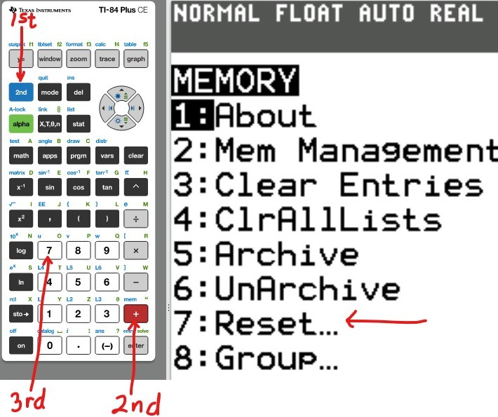
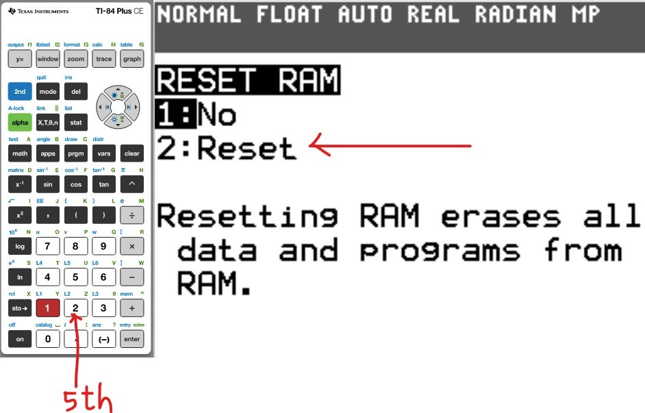
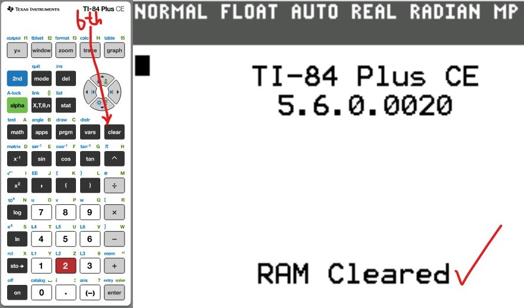

You may use any of these TI calculators:
TI-83 Plus
TI-84 Plus series
TI-Nspire CX series
TI-89 Titanium
TI-73 Explorer
The first thing we need to do is to reset the Random Access Memory (RAM).
This will clear everything that was initially stored by a previous user.
Also, after each problem, it is recommended that you reset the calculator.
Reset the Calculator
(1.)

(2.)

(3.)

(4.)

Set up the Calculator
The first thing we need to do is to turn Diagonstic On
(1.) 
(2.) 
(3.) 
Let us do some examples.
NOTE: Please begin from the first example. Do not skip.